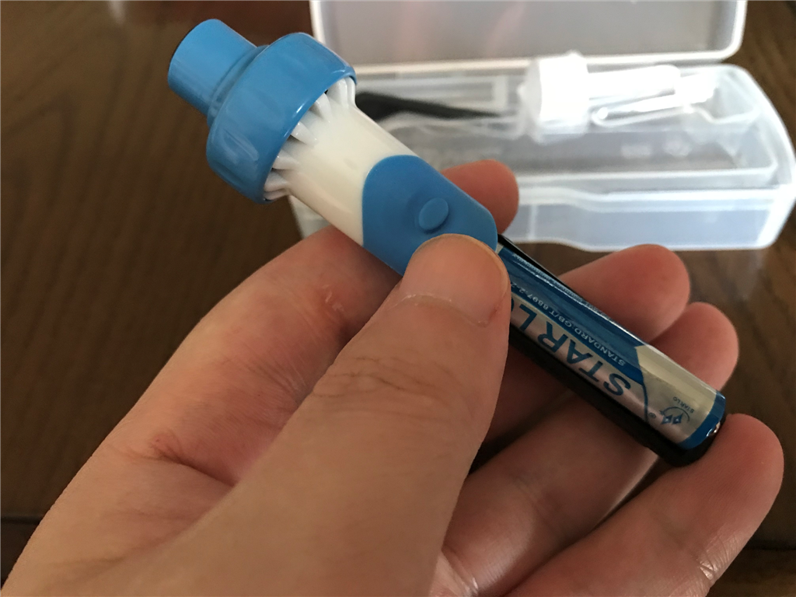
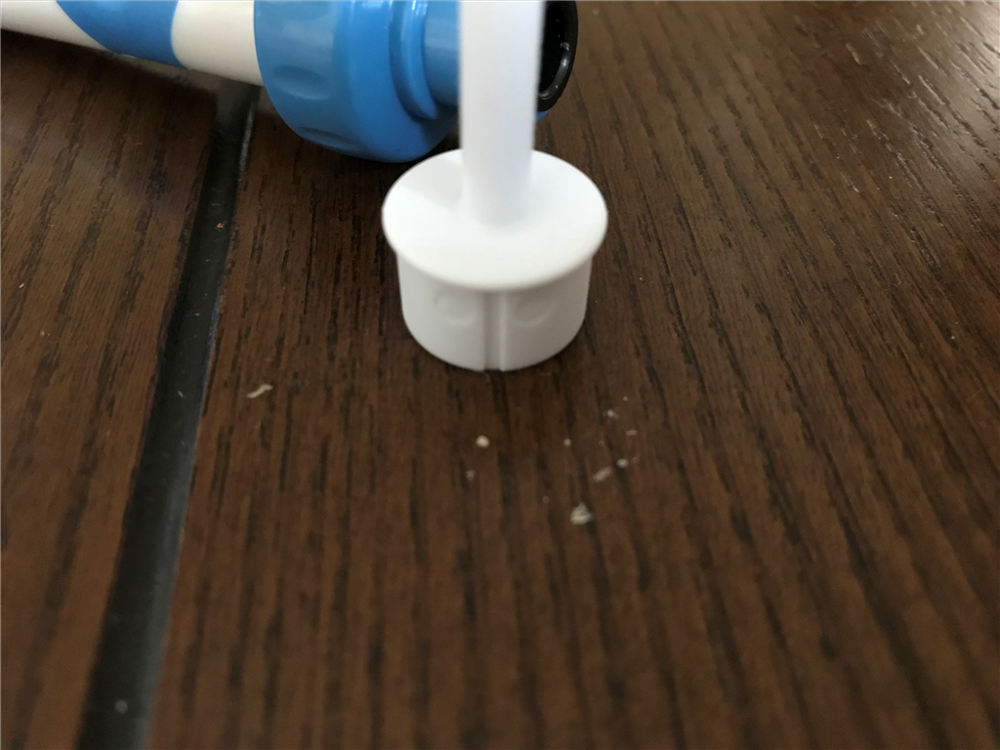

電動耳掃除機
公開日：
最近はちょっと忙しく、ブログを書く暇が持てなかった。面白いことも二、三あったのだけど、内輪のことなので書くことでもなし――などと蔑ろにするうちに、なんとなくブログを書く気がさっぱり起きなくなってしまった。いかぬ、いかぬ。
それはさておき、過日の Amazon タイムセールで電動耳掃除機を買った。
タイムセールとは面白いもので、買えば買ったであとで「買わずもがな」と後悔し、買わなければ買わないで「安く手に入れられたものを」と後悔する。「知らずば悩まずに済んだのに」とも思うが、あれだけ宣伝していればいやでも耳に、目に入る。まこと、害のみが多いものだが、最近は「日頃買わないけれど面白そうなもの」「あと100円高くば絶対買わないもの」を一つ買うことで、衝動（と後悔）を抑えられることを学んだ。
その収穫が、今回は電動耳掃除機だったというわけ。価格は1,700円。値引きは300円とたいしたことはなかったが、そういえば新しい耳かきが欲しいと思っていたところだったので、つい手にしてしまった。

コンパクトなケースに本体やノズル、掃除ブラシがおさめられていて、付属の単四電池を入れればすぐに使える。使い方はよくわからないのだが、要するにフツーの使い方でいいらしい。やわらかいノズルで耳垢をかき出し、電動モーターで吸引するという仕組みだ。サイトの説明では「モーターの振動で耳垢が取れる」というのもウチだったが、自分が思うに、単にモーターの振動を抑えられなかっただけだろう。耳の中でブインブインいうだけで、耳垢がこそげ落ちたようには感じない。そもそも吸引力もあまり感じなかった。

ただ、まったく効果がないかというとそうでもないみたいで。ノズルを外し、ヒゲソリの CM のノリで本体を逆さにして机にコンコンさせると、パラパラと耳垢が落ちてきた。この前、耳かきを椅子でひき殺してしまったせいで、最近は綿棒で耳かきをしていたのだけど、奥に押し込まれていた耳垢がとれたようだ。ちょっとうれしい。
")
EMILEAD 電動 耳かき イヤークリーナーGOSSO 耳 掃除 吸引 洗浄 専用ケース付 EM-003 (ブルー)
- 出版社/メーカー: EMILEAD
- メディア: ヘルスケア&ケア用品
- この商品を含むブログを見る
お勧め度は5段階中2だけど、まぁ、一家に一台あってもいいかもしれない。よく見たら類似品が1,000円ぐらいからあるみたいなので、よく選んで買えばいいと思うよ（震え声